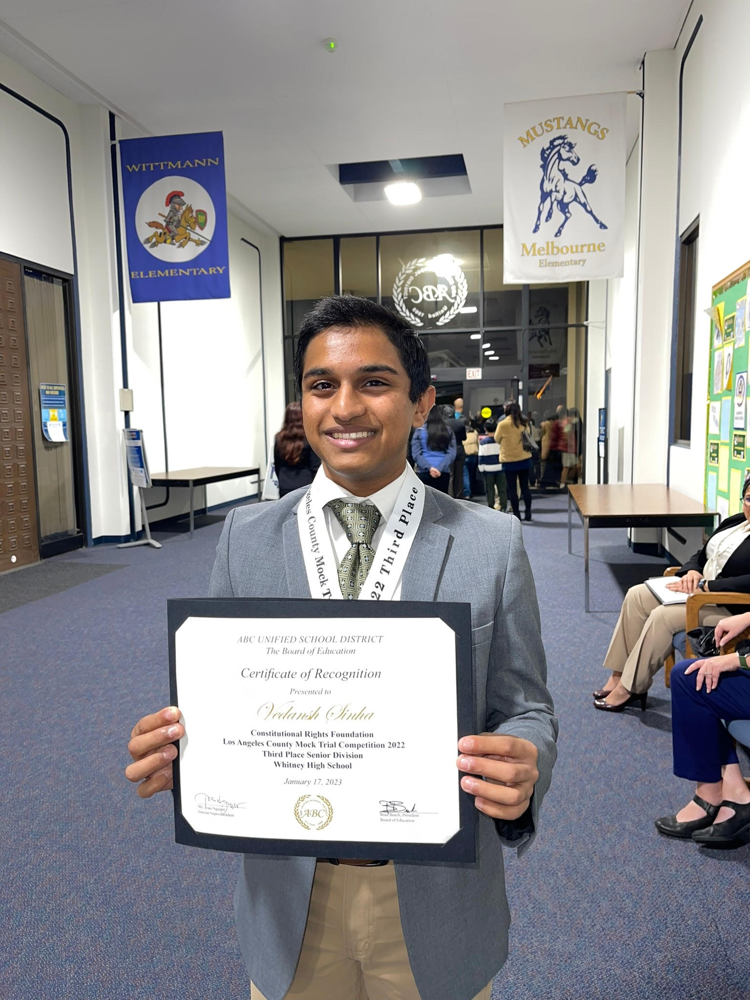
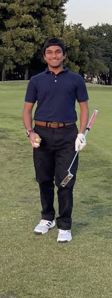

About Me
I am an avid golfer and tech enthusiast. I have experience in basic-level programming courses and projects.
I also have a passion for finance, I started with a personal investment account via TD Ameritrade.
Through this account, and painstaking amounts of trial and error, I have learned about investing and more about the economy.
I am curious to learn more about finance and more about the world of investing, such as how hedge funds and investment banking work.
Additionally, I am curious to get knowledge of what jobs and careers exist in the realm of finance as well as ways one can diversify and grow in the finance world.

Languages
- Fluent in English
- Knowledgeable in Spanish (written and spoken)
- Colloquial in Hindi
Clubs and Organizations
- Chief Financial Officer of La Sociedad, spanish club at Whitney Highschool 2023-2024
- Director of Activies of BEI, business and economics club at Whitney Highschool 2023-2024
- Director of Business at Bags 'N Blankets, NPO 2023-2024
Sports Affiliations
- Varsity golf at Whitney High School 2021-2025

- Southern California Junior Golf Association Member 2022
Volunteer Experience
- Learning World ~200 Hours Cerritos, CA 2018 – 2023
Assist with after-school program involving art, and stem.
Educate children through tutoring a variety of subjects.
- Cerritos City Volunteering ~15 hours Cerritos, CA 2023
Previous Employment
- Learning World Summer Program 2022-2023
Teaching class on basic money managing and investing (basic finance and stocks)
Co Teaching a class about basic public speaking skills and debate
Basic workshops in common core subjects (ELA and Mathematics)